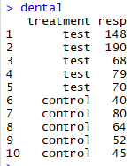
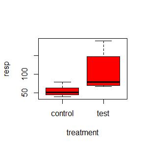
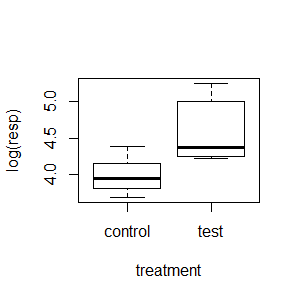
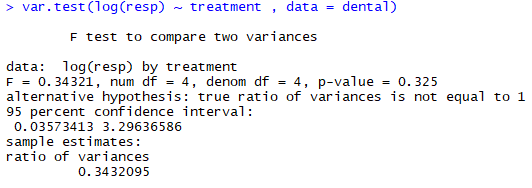
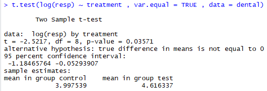
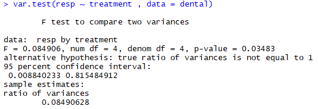
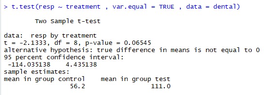
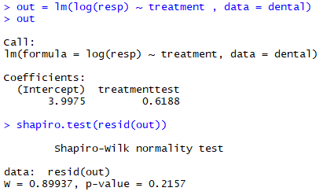

Two-Sample T-Test
: 서로 독립적인 두 집단의 평균의 차이가 0인지를 검정
[EX) 실험군과 대조군에 서로 다른 개입을 적용시킨 후 두 집단의 평균이 같은지를 비교하여 개입 효과의 차이를 평가하는 것.]
: 서로 독립적인 두 집단의 평균의 차이가 0인지를 검정
[EX) 실험군과 대조군에 서로 다른 개입을 적용시킨 후 두 집단의 평균이 같은지를 비교하여 개입 효과의 차이를 평가하는 것.]
- 순서
- 두 집단의 분산이 같은지 검정한다.
- 분산이 다르면 Welch의 t-test를 적용한다.
- 분산이 같으면 pooled variance를 이용한 t-test를 적용한다.
- 예시
- 분석과해석1
- Boxplot
- 등분산 검정
- 분산이 같은 경우 : pooled variance 이용
- 분석과해석2
- 등분산검정
- 분산이 다른 경우 : Welch의 t-test
- 정규성 검정
다른 두 조건(control , test)에서 배양된 뼈세포의 수(resp)를 측정한 자료
: 분석 이전에 Boxplot을 그려 두 그룹의 분포의 차이가 있는지 확인한다.

==> 변환 전에 비해 분산의 차이가 많이 좁혀졌음을 알 수 있다.
: 두 집단의 분산이 같은지 확인

귀무가설 : =
대립가설 :
검정통계량 : F(df1 = 4 , df2 = 4) = 0.3432
p-value : 0.325 > 0.05
결정 : =

귀무가설 : =
대립가설 :
검정통계량 : t(df=8) = -2.5217
p-value : 0.03571 < 0.05
결정 : 두 집단의 평균이 다르다.
: 데이터가 log-normal 분포를 따른다는 사실을 무시하고 log-변환 없이 원래 값으로 t-test를 해보자.

귀무가설 : =
대립가설 :
검정통계량 : F(df1 = 4 , df2 = 4) = 0.0849
p-value : 0.03483 < 0.05
결정 :

귀무가설 : =
대립가설 :
검정통계량 : t(df=4.674) = -2.1333
p-value : 0.08988 > 0.05
결정 : 평균이 같다는 귀무가설을 기각하지 못한다.
==> log-변환해야 하는 변수를 변환 없이 분석하면 유의하지 않은 결과가 나온다.

==> p-value = 0.2157로 정규분포 가정에 문제가 없음.